<div class="textcontainer">
<p class="margin"> </p>
<h3>Week 6: Electronic Inputs</h3>
<h4 style="text-align:center"><u>Intro</u><h4><br>
<h5>This week’s assignment was enjoyable yet tedious. I created/measured 5 sensors, 3 of which I made myself using capacitance. These 5 were: </h5>
<ul>
<li>A hall sensor measuring the <b>distance</b> between sensor and magnet</li>
<li>A hall sensor measuring the <b>number of magnets</b> placed at a fixed distance</li>
<li>A capacitance-based <b>distance</b> sensor</li>
<li>A capacitance-based <b>salinity</b> sensor for salt-water solutions</li>
<li><b>Fruit finder</b>: A capacitance-based sensor that identifies chunks of fruit</li>
</ul>
<h5>For each of these, I collected data via <b>google sheets</b> and plotted valiues and uncertainties on <b>LoggerPro</b><br><br><br>
<h4 style="text-align:center"><i><b>Assignment 1: Capactive Sensor</b></i><h4>
<h4 style="text-align:center"><u>Hall sensor measuring distance</u><h4><br>
<div style="display: flex; align-items: flex-start; gap: 20px;">
<div style="flex: 1;">
<h5>
I used a Hall sensor to measure magnetic field strength with my ESP32-C3 microcontroller. First, I connected the sensor’s analog output to an ADC pin and powered it using 3.3V and GND. Then, I wrote a program that repeatedly read analog values and printed the results into the serial monitor. Moving the magnet close to the sensor caused a spike in the readings. To increase sensitivity, I averaged multiple readings in a loop. Initially, the sensor was affected by interference from metallic/electronic materials in the lab, so I moved my apparatus to the library where there was lesser noise, and the sensor performed much more reliably. On the side is a photo of my setup and below is a snippet of my code:
</h5>
<pre style="font-size: 16px;"><code class="cpp">
int analog_pin = A3;
void setup() {
Serial.begin(115200);
}
void loop() {
long sum = 0;
int N_samples = 100;
for (int i = 0; i < N_samples; i++) {
sum += analogRead(analog_pin);
}
long average = sum / N_samples;
serial.printl(average);
delay(100);
}
</code></pre>
</div>
<div style="flex: 1;">
<p>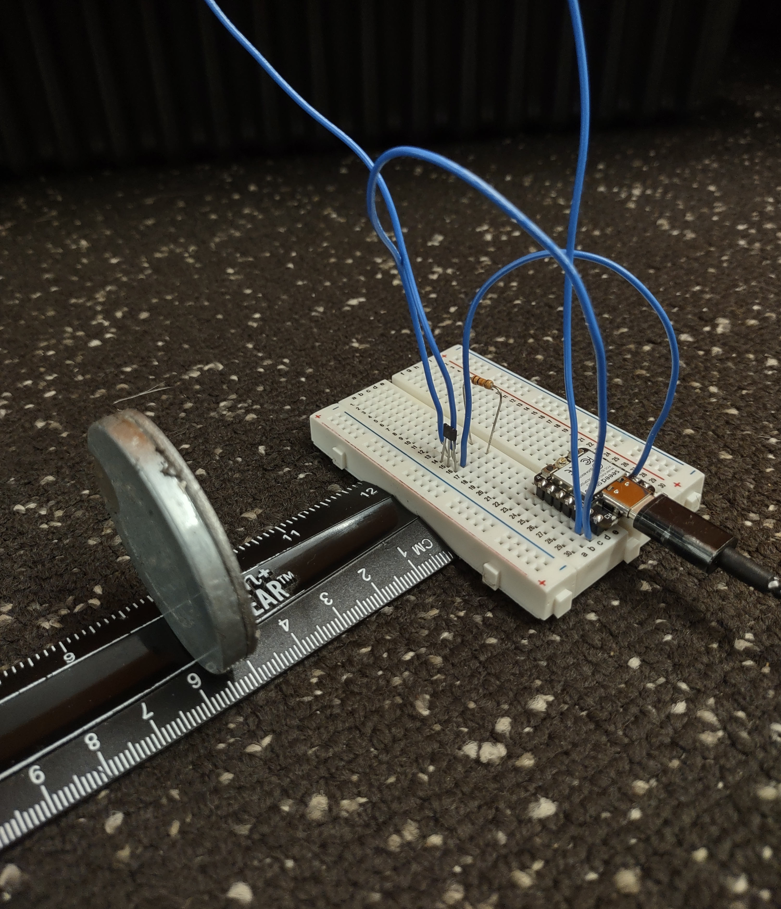</p>
</div>
</div>
<br>
<h5>
I positioned the magnet at a minimum of 1 cm (getting the largest possible deviation), and a maximum of 35 inches (where the reading was close to negligible). With every reading, I moved the magnet further away by increments of 1 cm, and took the mean of 35 randomly selected values produced by the serial monitor. I then calculated the absolute and relative uncertainties. Lastly, I graphed the data on logger pro with the uncertaities and found the line of best fit in the form 'y = A*(1 - exp(-B*x)) + C' (asymptotic exponential growth). The correlation was 0.9929! Here are photos of my data spreadsheet and graph, along with download links for both:
</h5><br>
<p>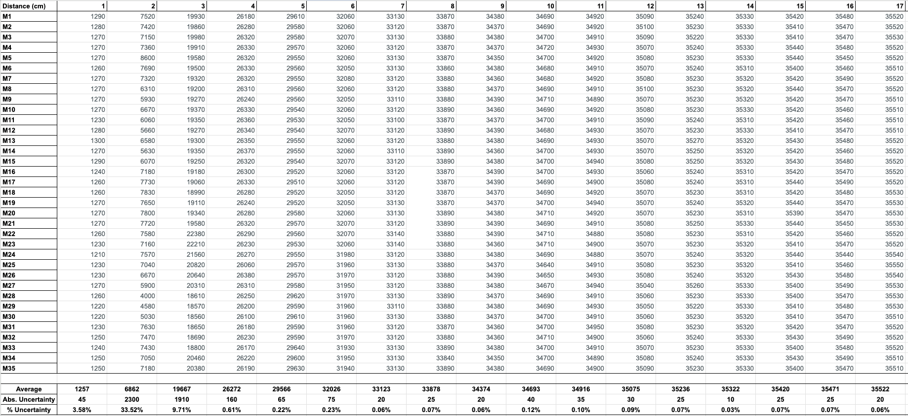</p><br><br>
<p>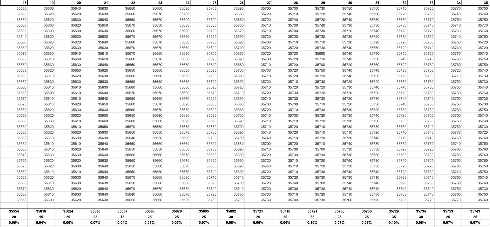</p><br><br>
<p>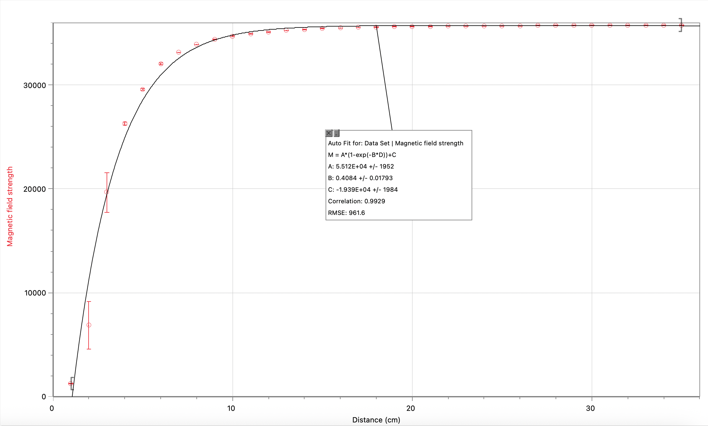</p><br><br>
<h5>
From the line of best fit, I was able to find an equation to convert the readings on the serial monitor into distance (the inverse function of the curve fit equation): <b>D = (−1 / 0.4084) × ln(1 − (M + 19390) / 55120)</b>, where D is distance and M is the reading.
</h5>
<h5><a href='https://docs.google.com/spreadsheets/d/1ulrwQvhtu5QFgPShLgykQ0j_zKpfvFhSVZVIT6vpMmI/edit?usp=sharing' target="blank">See table</a></h5>
<h5><a download href='./Magnet_distance.CMBL'>See graph</a></h5><br>
<h4 style="text-align:center"><u>Hall sensor estimating number of magnets</u><h4><br>
<div style="display: flex; align-items: flex-start; gap: 20px;">
<div style="flex: 1;">
<h5>
The setup for this sensor was the same as the first (code, wiring, etc.). However, instead of moving the magnet, I tried to increase its field strength from a fixed distance. I did this by positioning a small neodymium magnet 1 inch away from the sensor, and pogressively adding more magnets at the back. Similar to the previous, I sampled each instance 35 times, from a range of 1 to 28 magnets. I calculated and graphed the mean and uncertainty for each instance, and fitted it to an asymptotic exponential growth curve, with a correlation of 0.998! Here, the equation to convert readings on the serial monitor into number of magnets was: <b>n = (−1 / 0.06662) × ln(1 − (M − 35490) / 1867)</b>, where n is the number of magnets and M is the reading.
</h5>
</div>
<div style="flex: 1;">
<p>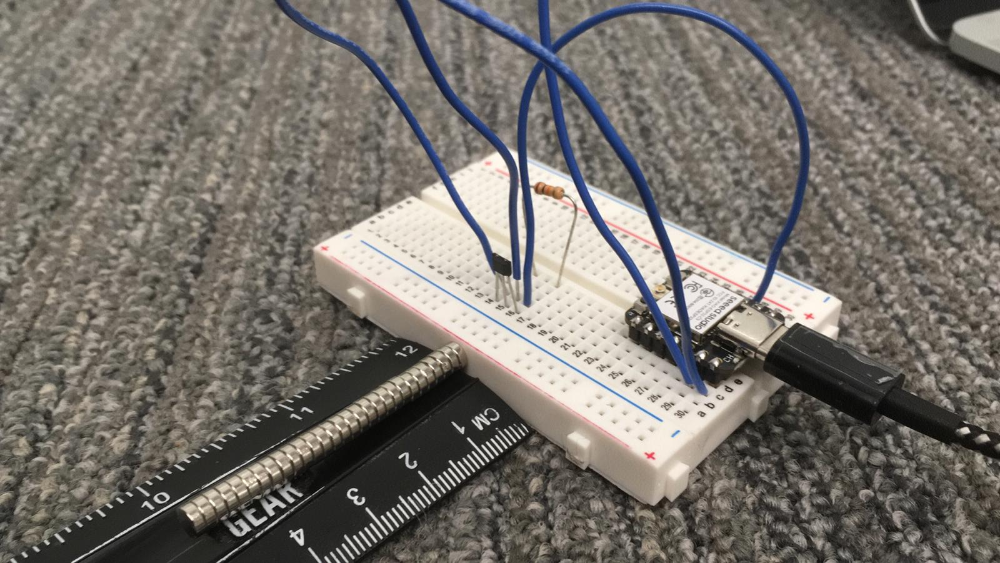</p>
</div>
</div>
<br>
<p>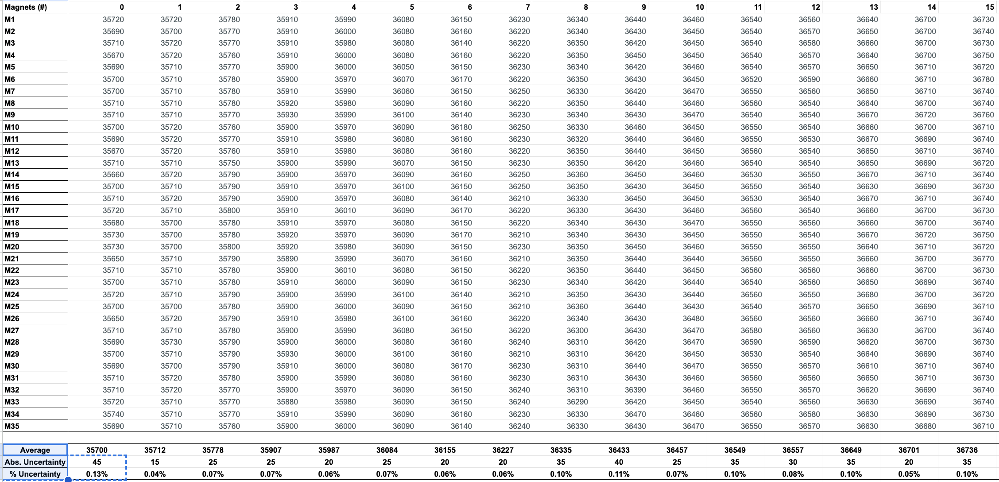</p><br><br>
<p>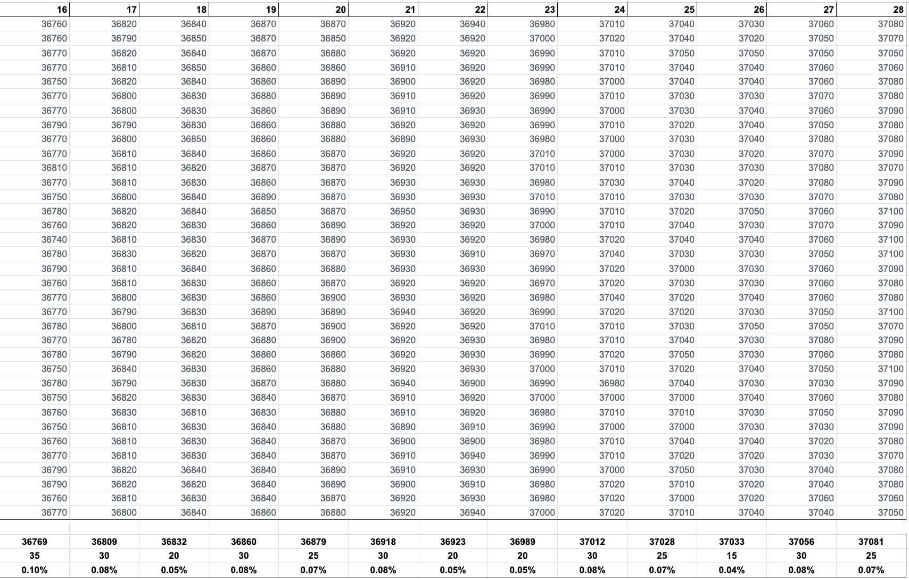</p><br><br>
<p>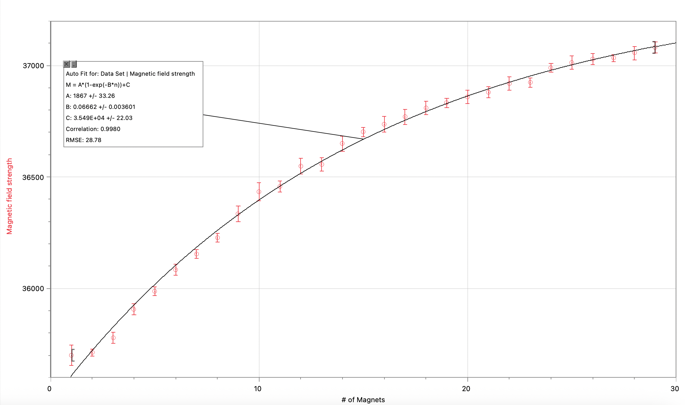</p><br><br>
<h5><a href='https://docs.google.com/spreadsheets/d/1n2h92X3k6wM2Fv_rXH_uCR4osd7s6GSu34Z93IaVu5M/edit?usp=sharing' target="blank">See this table</a></h5>
<h5><a download href='./Magnet.CMBL'>See this graph</a></h5><br>
<h4 style="text-align:center"><i><b>Assignment 2: [Use + Calibrate Another Sensor]</b></i><h4>
<h4 style="text-align:center"><u>Capacitance-based distance sensor</u><h4><br>
<div style="display: flex; align-items: flex-start; gap: 20px;">
<div style="flex: 1;">
<h5>
This was the first capacitive sensor I built. It consisted simply of two copper electrodes mounted on wooden stands connected to rx/tx pins on the ESP32. The code I used was the same as the one listed on the Digital Fabrication website for rx-tx sensing:</h5>
<pre style="font-size: 16px;"><code class="cpp">
long result;
int analog_pin = A3;
int tx_pin = 4;
void setup() {
pinMode(tx_pin, OUTPUT);
Serial.begin(9600);}
void loop() {
result = tx_rx();
Serial.println(result);}
...
</code></pre>
</div>
<div style="flex: 1;">
<video src="Distance_sensor_capac.mp4" autoplay loop muted playsinline style="width: 500px; height: auto; border: 1px solid #ccc;"></video>
</div>
</div>
<br>
<h5>
I measured the capacitance value (outputted by the Serial Monitor) from a range of distance of 1 inch to 24 inches, at increments of 1 inch. At each instance, I sampled 35 values, found their mean and uncertainty, and graphed them against a fitted exponential growth curve. The correlation was 0.9895, and the relationship between distance (D) and reading (R) was <b>R = 5.953e4 * (1 - exp(-0.1107 * D)) + C</b>. The graph has a strange shape: until a distance of 15 inches, it followed a linear path. However, after this, it began plateuing into an asymptote. I think the reason for these inconsistencies was the environment - I set this up in the lab, where everything from a charging cable to my hand changed the values. If I had done this in a controlled environment, I believe I would have gotten a smoother curve:</h5><br>
<p>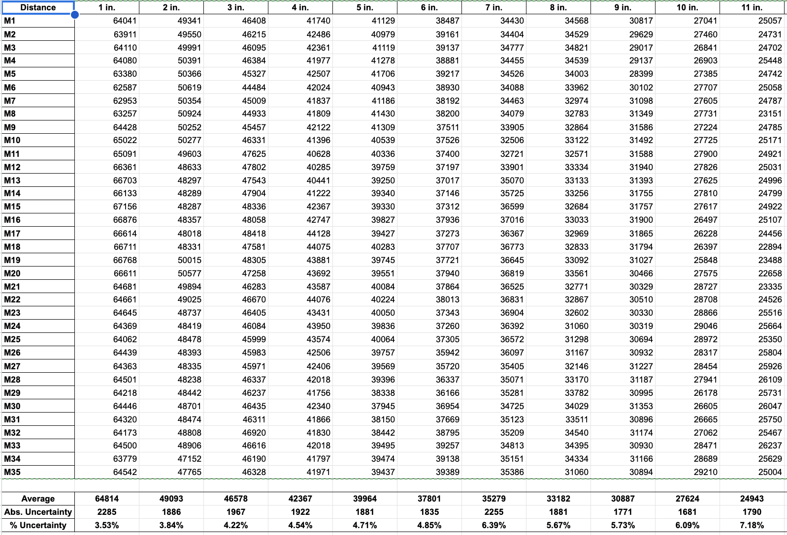</p><br><br>
<p>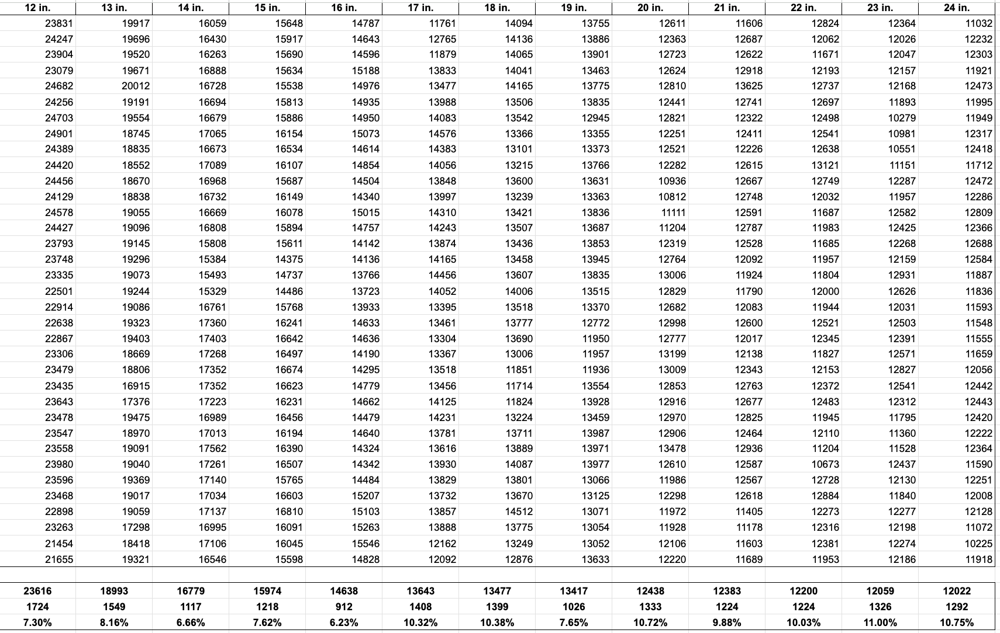</p><br><br>
<p>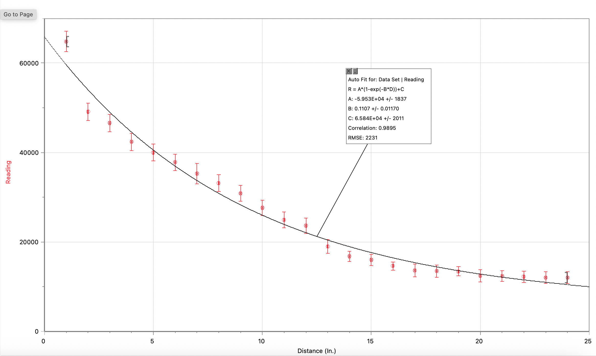</p><br><br>
<h5><a href='https://docs.google.com/spreadsheets/d/1y6en_sN5UQ9Aud5AFwfud-ApPV2OziUN0j1kELyc9E4/edit?usp=sharing' target="blank">See this table</a></h5>
<h5><a download href='./Capacitance_distance graph.CMBL'>See this graph</a></h5><br>
<h4 style="text-align:center"><u>Salinity sensor</u><h4><br>
<div style="display: flex; align-items: flex-start; gap: 20px;">
<div style="flex: 1;">
<h5>
The salinity sensor worked on the same code as the distance sensor before: only that the electrodes were now fastened to opposite sides of a plastic cup that was filled with a salt solution. I made 13 solutions ranging from pure water to a solution with 6mL (7.3g) of dissolved salt, increasing salt concentration by increments of 0.5 mL (0.6g) (measured via pipette). To the right are two photos of the setup. I sampled 75 values for each solution, found their mean and absolute value, and plotted them. However, my graph was incredible strange - decreasing exponentially until a salt concentration of 3.5 mL, then increasing. I had only expected it to decrease, as salt's higher conductivity results in faster voltage equalization and a weakening of capacitive coupling. My hypothesis for the sudden u-turn is that my solution became saturated, and further adding salt increased its volume while only marginally changing its capacitance, resulting in the values increasing. Due to the U-shape, I fitted the points against a quadratic curve.
</h5>
</div>
<div style="flex: 1;">
<p>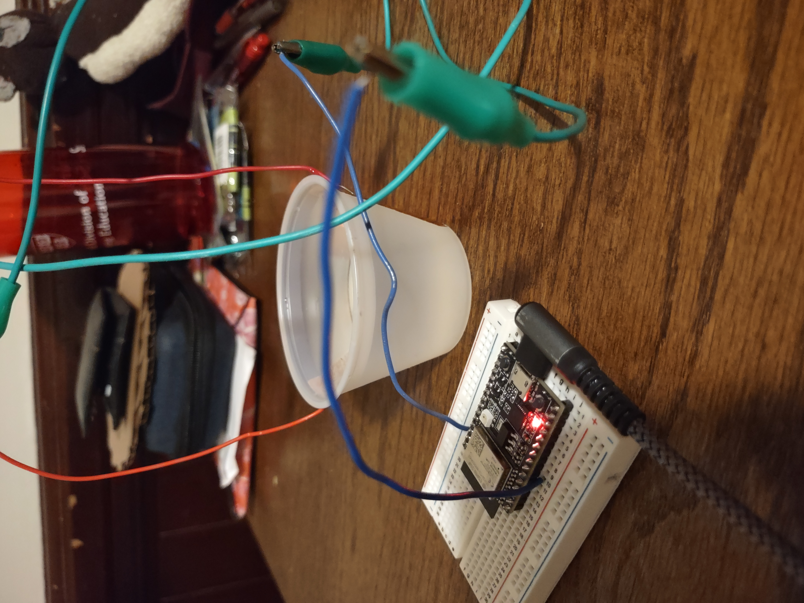</p>
<p>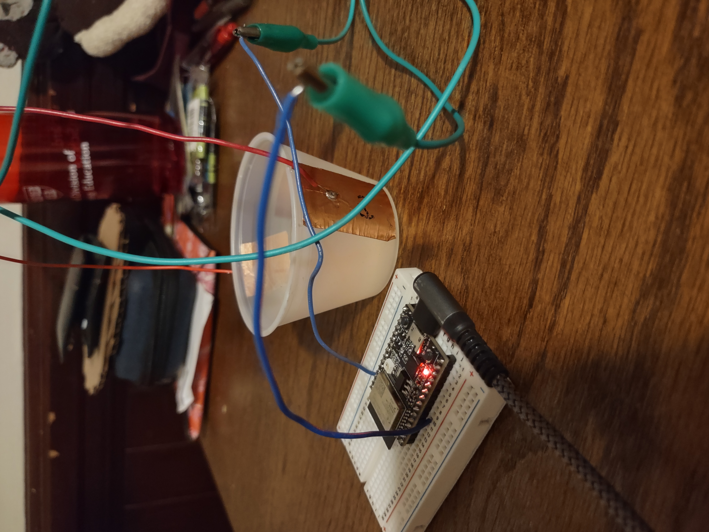</p>
</div>
</div><br>
<p>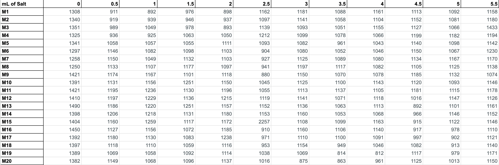</p><br><br>
<p>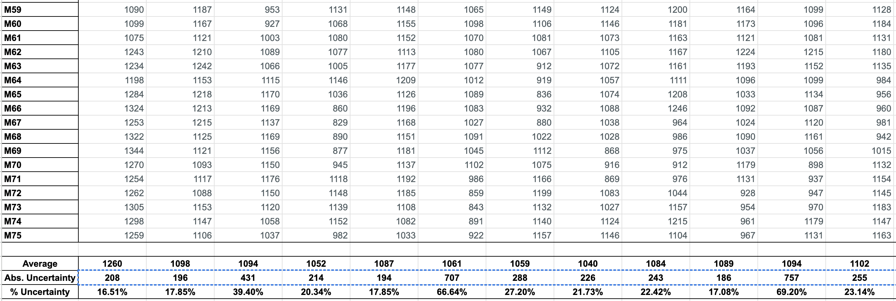</p><br><br>
<p>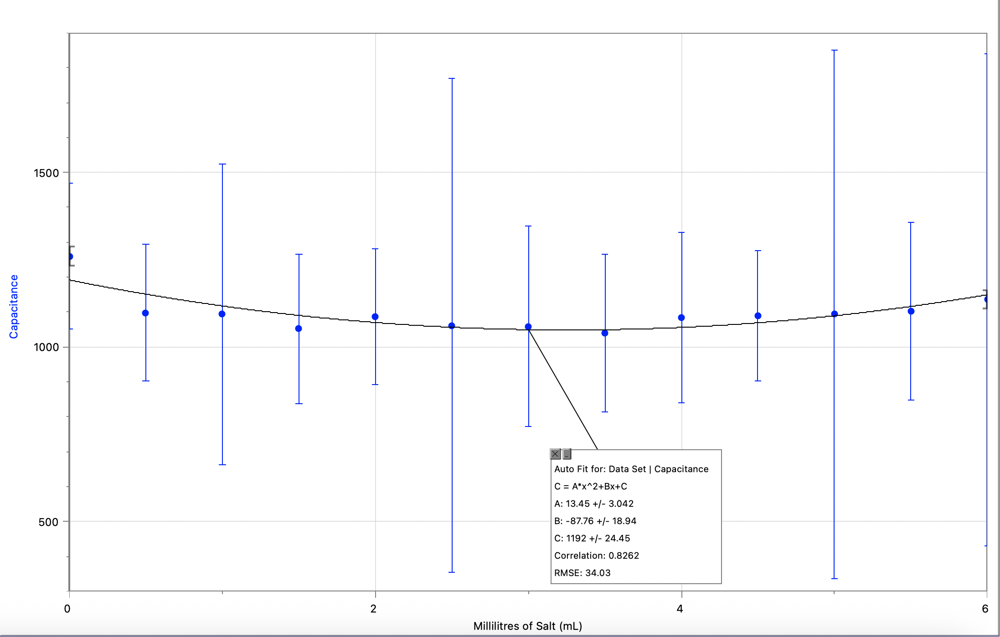</p><br><br>
<h5>
<h5><a href='https://docs.google.com/spreadsheets/d/1zrKB5sUlNs3MzzoF9QIuhYZdZjTOSFanp7X395SgjiY/edit?usp=sharing' target="blank">See table</a></h5>
<h5><a download href='./Salinity Detector.CMBL'>See graph</a></h5><br>
<h4 style="text-align:center"><u>Fruit Finder!</u><h4><br>
<h5>
My last capacitive sensor is the fruit finder. This is how it worked:</h5>
<ul>
<li>First I gathered 6 fruits: An orange, an apple, a kiwi, a banana, a pear, and a zucchini (yes - zucchini - the most important fruit of all :)</li>
<li>I cut each into a cylinder of height 20mm and diameter 24mm (I did this via a 3D printed bit I made - a cutting video is attached below)</li>
<li>I placed the fruit within the 3D-printed plastic cylinder, leaving 1mm gaps at each end to not get moisture on the copper, and then placed a circular elactrodes at each end.</li>
<li>Using the same code as the last two sensors, I found the dialectric constants of each fruit (except for the orange, which was too watery) by averaging 100 value outputs of each fruit</li>
<li>Based on the mean and range of each fruit's reading I created a table approximating a non-overlapping range for each fruit</li>
<li>I then coded the serial monitor to approximate which fruit was placed in the cylinder based on this range.</li>
</ul>
<h5>Below are photos/snippets of the functionality, code, and more:
</h5><br>
<table>
<tr>
<td>
<p>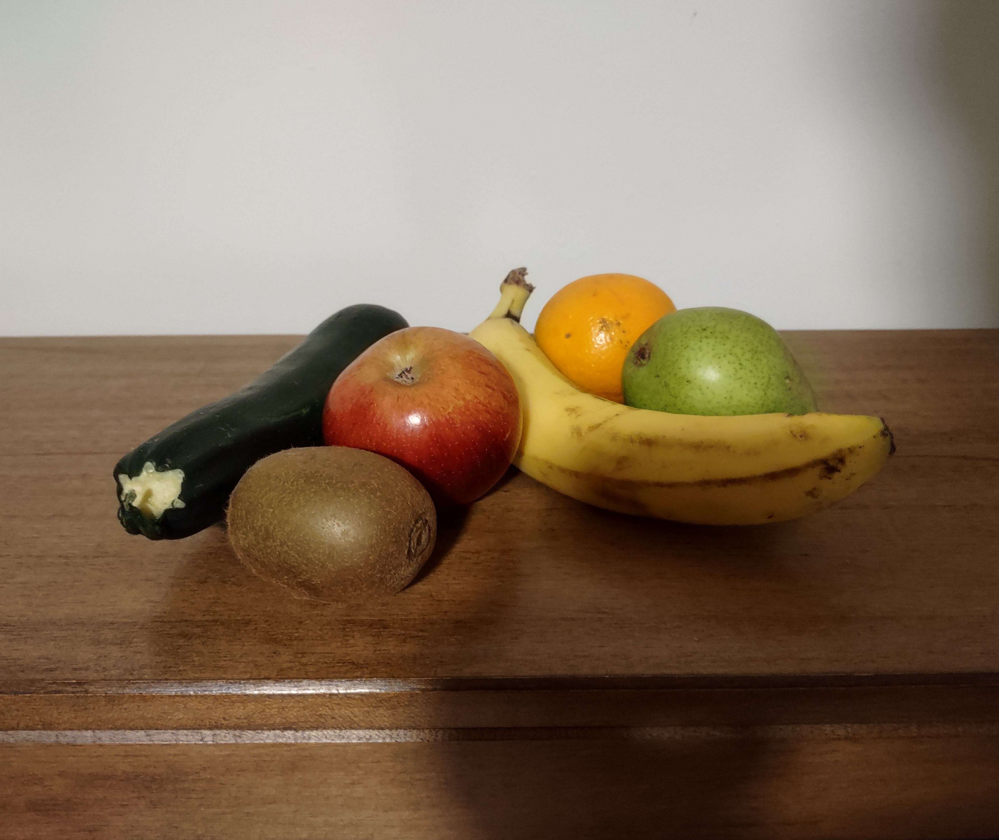</p>
</td>
<td>
<p>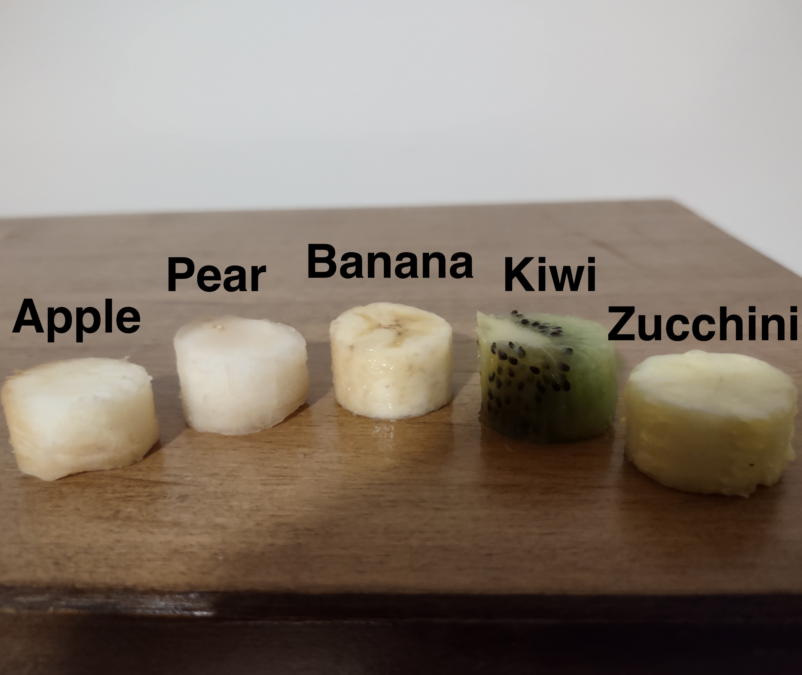</p>
</td>
</tr>
</table><br>
<video src="FruitCut.mp4" autoplay loop muted playsinline style="width: 50%; height: auto; border: 1px solid #ccc;"></video><br><br><br>
<h4 style="text-align:center"><b>Data:</b><h4><br>
<p>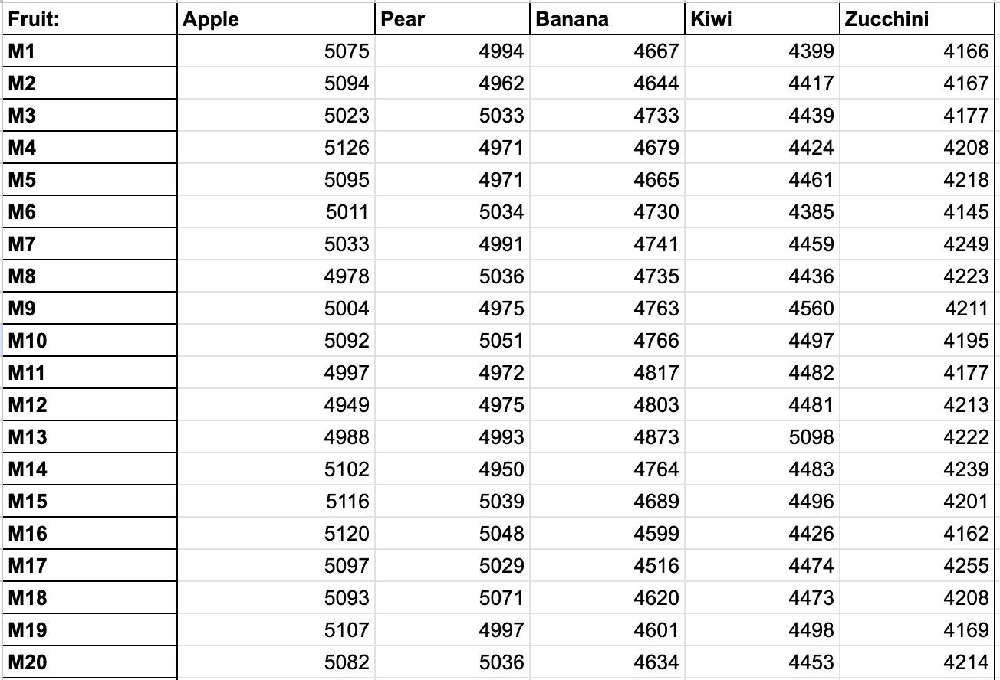</p><br><br>
<p>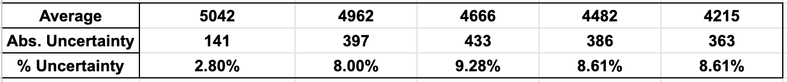</p><br><br>
<p>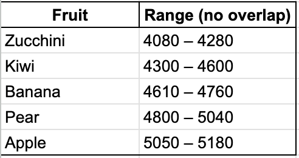</p><br><br>
<h5><a href='https://docs.google.com/spreadsheets/d/102uNKGVUid4F_Vbdx8jE9iyo2xuiyyI_fwUBhHRlOLU/edit?usp=sharing' target="blank">See table</a></h5>
<h4 style="text-align:center"><b>Code:</b><h4><br>
<pre style="font-size: 16px;"><code class="cpp">
long result;
int analog_pin = A3;
int tx_pin = 4;
String currentFruit = "";
void setup() {
pinMode(tx_pin, OUTPUT);
Serial.begin(9600);
}
void loop() {
result = tx_rx();
String newFruit = detectFruit(result);
if (newFruit != currentFruit) {
currentFruit = newFruit;
Serial.println("Fruit detected: " + currentFruit);
}
delay(250);
}
long tx_rx() {
int read_high;
int read_low;
int diff;
long int sum = 0;
int N_samples = 100;
for (int i = 0; i < N_samples; i++) {
digitalWrite(tx_pin, HIGH);
read_high = analogRead(analog_pin);
delayMicroseconds(100);
digitalWrite(tx_pin, LOW);
read_low = analogRead(analog_pin);
diff = read_high - read_low;
sum += diff;
}
return sum;
}
String detectFruit(long val) {
if (val < 4280) return "Zucchini";
else if (val < 4600) return "Kiwi";
else if (val < 4760) return "Banana";
else if (val < 5040) return "Pear";
else return "Apple";
}
</code></pre>
<h4 style="text-align:center"><b>Functionality:</b><h4><br>
<video src="FruitTest.mp4" autoplay loop muted playsinline style="width: 100%; height: auto; border: 1px solid #ccc;"></video><br>
<h5>
While the Fruit Finder could differentiate the appla nd zucchini immediately, the in-between values of the apple, pear and banana made them difficult to identify, as their ranges aren't actually discrete in real life. I'd have to increace my electrodes' sensitivity in order to differentiate better. And that's about it!
</h5><br>
</div>